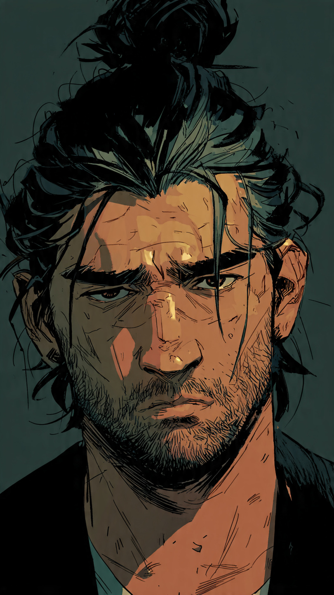

ADRIANO C. RODRIGUES
RU 4998791
Clique no card para saber mais sobre mim
Informações pessoais
Sou estudante da faculdade Uninter de Ciênca da Computação. Estudando no momento o desenvolvimento web, com foco em HTML, CSS e JavaScript. Busco evoluir constantemente na área de tecnologia.
Hobbies
Gosto de tecnologia, jogos, programação e aprender novas ferramentas para desenvolvimento web. Além de escrever e desenvolver histórias em quadrinhos.